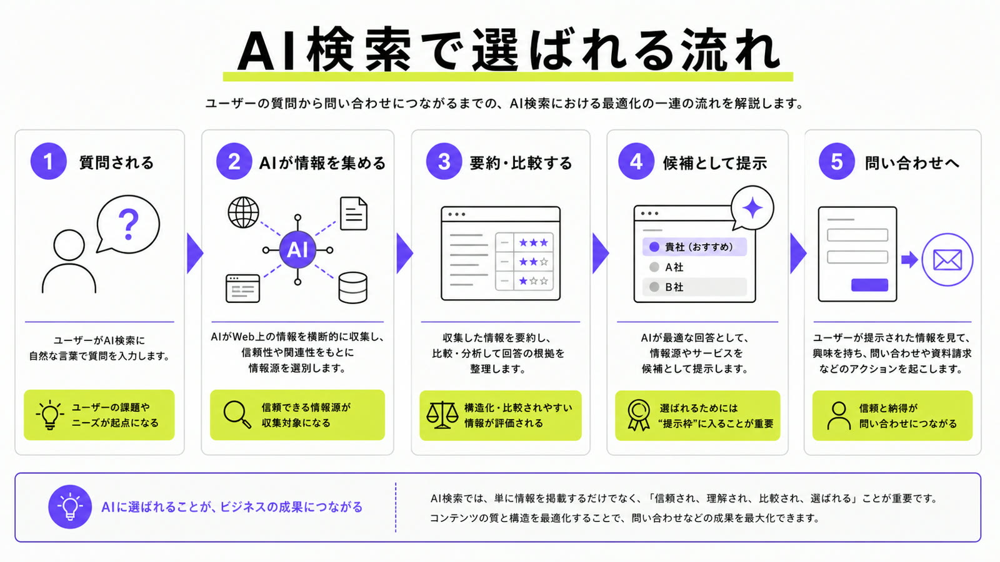
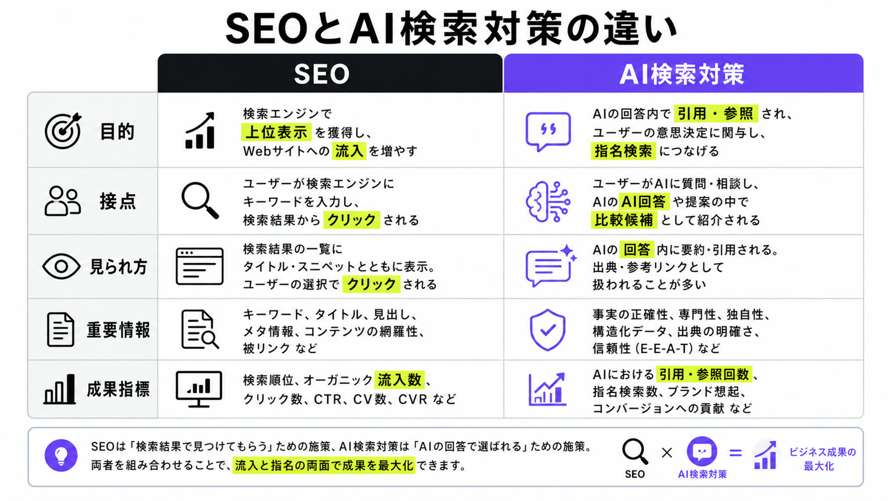
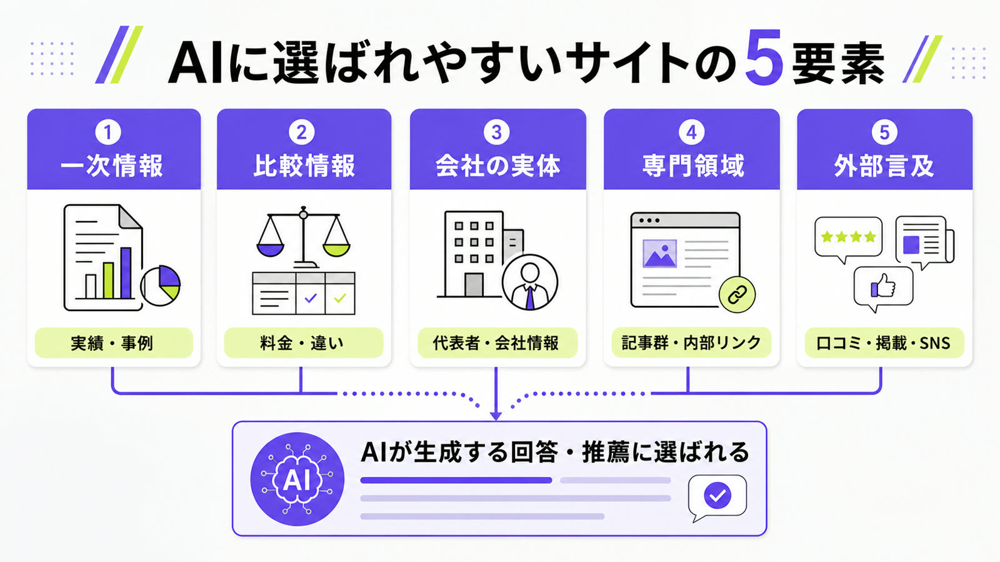
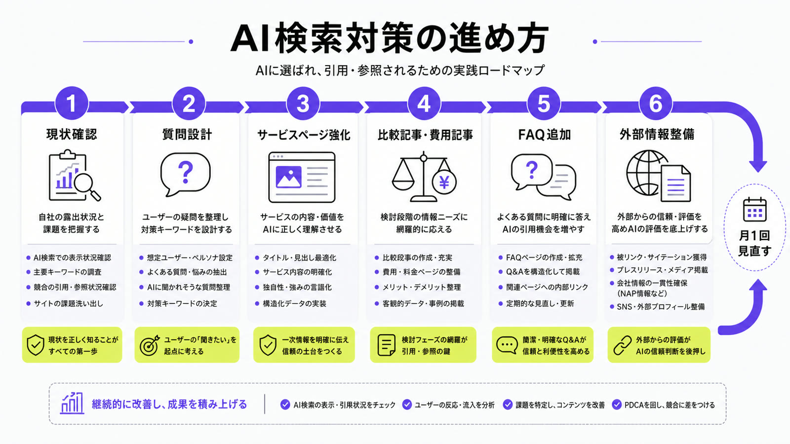
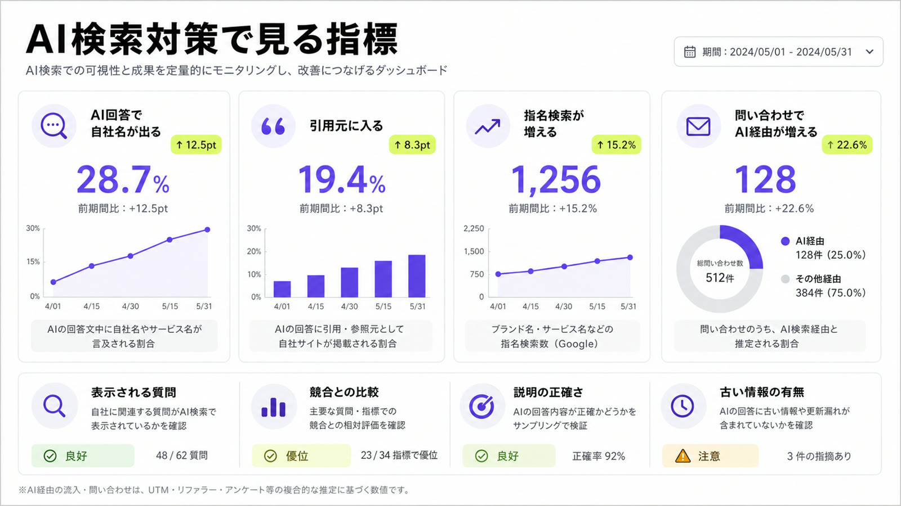

AI検索対策とは？SEOとの違いと始め方をわかりやすく解説

AI検索対策とは、ChatGPT Search、GoogleのAI Overview・AI Mode、Gemini、PerplexityなどのAI検索で、自社サイトや自社サービスが引用・参照・推薦されやすい状態を作る取り組みです。
これからのWeb集客では、「検索結果で上位に出るか」だけでなく、「AIの回答内でどう扱われるか」まで考える必要があります。SEOの基本を土台にしながら、サービスページ、FAQ、比較情報、会社情報をAIにも人間にもわかりやすく整えることが重要です。
この記事では、AI検索対策の意味、SEOとの違い、AI検索で選ばれやすいサイトの特徴、具体的な進め方、見るべき指標までをまとめて解説します。
目次

AI検索対策とは
AI検索対策とは、AIが回答を生成するときに参照しやすい情報をWeb上に整備し、自社や自社サービスがAIの回答内で取り上げられやすくする施策です。
ここでいうAI検索とは、単に検索窓にキーワードを入力する従来型の検索ではありません。ユーザーが「おすすめの会社は？」「A社とB社の違いは？」「費用相場は？」「初心者ならどれを選ぶべき？」のように自然文で質問し、AIが複数の情報源をもとに回答する検索体験を指します。
たとえばChatGPT Searchは、ユーザーの質問に応じてWebを検索し、関連するWebソースへのリンク付きでタイムリーな回答を返す検索機能です。従来なら検索エンジンで複数ページを見比べていた情報収集が、AIとの対話の中で進みやすくなっています。
参考：OpenAI｜Introducing ChatGPT search
AI検索対策で重要なのは、AIに媚びた文章を書くことではありません。AIが回答を作るときに、自社の情報を正しく理解できる状態を作ることです。
たとえば、次のような情報が不足しているサイトは、AIに理解されにくくなります。
- 何の会社なのかが曖昧
- どの領域に強いのかがわからない
- 誰に向いているサービスなのかが書かれていない
- 料金や対応範囲が不明確
- 実績や事例が少ない
- 他社との違いが説明されていない
- よくある質問への回答が薄い
- 代表者や著者の専門性が見えない
AI検索対策では、こうした不足を一つずつ埋めていきます。

AI検索対策が必要になった背景
AI検索対策が重要になっている理由は、検索体験そのものが変わり始めているからです。
これまでの検索では、ユーザーは検索結果の一覧を見て、気になるページをクリックし、自分で情報を比較していました。しかしAI検索では、AIが先に情報を要約し、比較し、ある程度の判断材料を提示します。
この変化によって、Webサイト側には大きく2つの問題が起こります。
1つ目は、クリックされる前に判断されることです。
ユーザーがAIの回答だけで概要を理解し、比較候補を絞り、次の行動を決めるようになると、検索結果に表示されてもクリックされないケースが増えます。検索順位が高くても、AI回答内で十分な情報が提示されれば、ユーザーはサイトを開かずに判断する可能性があります。
2つ目は、比較候補に入れないリスクです。
AI検索では、ユーザーが「おすすめの会社」「比較」「選び方」「費用相場」などを質問したとき、AIが候補を絞って提示します。そこで自社名が出なければ、ユーザーは自社を知らないまま比較検討を終える可能性があります。
AI検索時代に本当に怖いのは、アクセスが減ることだけではありません。もっと怖いのは、見込み客の検討リストにすら入れなくなることです。
Pew Research Centerの2025年調査では、Google検索でAI要約が表示された場合、通常の検索結果リンクをクリックした割合は8%でした。一方、AI要約が表示されなかった場合は15%でした。また、AI要約内のリンクをクリックした割合は1%にとどまっています。このデータは、AI要約が表示される検索体験では、ユーザーが従来のリンクをクリックしにくくなる可能性を示しています。
参考：Pew Research Center｜Do people click on links in Google AI summaries?
AI検索対策とSEOの違い
AI検索対策とSEOは、完全に別物ではありません。むしろ、SEOの基本ができていないサイトはAI検索でも不利になります。
ただし、狙うべき成果は変わります。
| 項目 | SEO | AI検索対策 |
|---|---|---|
| 主な目的 | 検索結果で上位表示される | AI回答内で引用・参照・推薦される |
| 主な接点 | Google検索結果、検索一覧 | AI Overview、AI Mode、ChatGPT Search、Gemini、Perplexityなど |
| ユーザー行動 | 検索結果からページをクリックする | AI回答を読んで候補を絞る |
| 重要な要素 | キーワード、検索意図、内部リンク、被リンク、コンテンツ品質 | 一次情報、比較情報、実績、評判、エンティティ、FAQ、外部言及 |
| 成果指標 | 検索順位、クリック数、流入数、CV | AI回答内の表示、引用、指名検索、比較候補入り、問い合わせ |
| 弱点 | 上位表示されてもクリックされない場合がある | 表示されても流入として計測しにくい場合がある |
SEOは「検索結果で見つけてもらう施策」です。
AI検索対策は「AIの回答材料として選ばれる施策」です。
この違いを理解しないまま、従来のSEO記事を増やすだけでは、AI検索時代の集客には対応しきれません。

SEOはAI検索対策の土台になる
AI検索対策を語ると、「SEOはもう終わるのか」という話になりがちです。しかし、SEOが不要になるわけではありません。
Google検索のAI OverviewやAI Modeでは、従来のSEOベストプラクティスが引き続き有効です。ページがインデックスされ、検索結果でスニペット表示の対象になり、重要な情報がテキストとして読み取れる状態になっていることは、AI検索でも土台になります。
また、Google検索のAI機能では、ユーザーの質問に対して複数の関連検索を走らせる「query fan-out」が使われる場合があります。これは、単一キーワードで1記事を上位表示させるだけでなく、周辺の問いまで含めて情報を整える重要性を示しています。llms.txtのようなAI向けファイルや特別なマークアップも、Google検索のAI機能に表示されるための必須条件ではありません。
参考：Google Search Central｜Optimizing your website for generative AI features on Google Search
SEOだけでは足りない理由
SEOでは、特定の検索キーワードで上位表示を狙います。
一方、AI検索では、ユーザーの質問がより複雑になります。
たとえば、ユーザーは次のように聞きます。
- 大阪でAI検索対策に強い会社は？
- 中小企業がAI検索対策を始めるなら何からやるべき？
- SEO会社とAI検索対策会社の違いは？
- AI検索対策の費用相場はいくら？
- ChatGPTに自社名を出すには？
- AI Overviewに引用されるには？
このような質問では、1本の記事だけで答え切るのは難しくなります。
AIは、基礎知識、比較情報、料金、実績、外部評価、会社情報、FAQなどを組み合わせて回答を作ります。そのため、AI検索対策では、個別記事だけでなく、サイト全体とWeb上の情報全体を設計する必要があります。
AI検索で選ばれやすい情報の特徴
AI検索で選ばれやすい情報には、いくつかの共通点があります。会社概要、サービスページ、FAQなど企業サイト全体の具体的な見直し方は、AI検索に強い企業サイト設計の記事で詳しく解説しています。

一次情報がある
AI検索で強いのは、どこにでもある一般論だけをまとめたページではありません。
自社の経験、実績、事例、調査、独自の比較、失敗例、顧客の声、料金の考え方など、他社にはない一次情報があるページです。
たとえば、以下のような情報はAI検索と相性がよいです。
- 実際の支援事例
- 料金が変動する理由
- 依頼前に確認すべきポイント
- 業界別の失敗例
- よくある相談内容
- 他社と比較したときの違い
- 自社が対応できること、できないこと
- 顧客が成果を出すまでの流れ
AIは、抽象的な美辞麗句よりも、具体的な判断材料を拾いやすいです。
「高品質なサービスを提供しています」では弱いです。
「月間100本以上の記事制作体制を構築した経験があり、構成設計・執筆・編集・品質管理まで分業化して運用していた」のように、具体的な経験や数字がある方が、AIにも人間にも伝わります。
比較しやすい情報がある
AI検索は、比較と相性が非常に高いです。
ユーザーはAIに対して、次のような質問をします。
- おすすめの会社は？
- どれを選べばいい？
- A社とB社の違いは？
- 費用相場はいくら？
- 初心者には何が向いている？
- 法人向けならどこがいい？
- 失敗しない選び方は？
このとき、AIは各サイトから比較しやすい情報を集めます。
そのため、自社サイト内に以下の情報があると有利です。
- 料金表
- プラン別の違い
- 対応範囲
- 向いている企業
- 向いていない企業
- メリット・デメリット
- 他社との違い
- 導入事例
- FAQ
- 比較表
AI検索対策では、「自社の良さを語る」だけでは足りません。
ユーザーが比較検討するときに必要な材料を、先回りして用意する必要があります。
発信者と会社の実体が見える
AI検索では、誰が発信している情報なのかも重要です。
匿名で一般論だけを書いているサイトよりも、実務経験、専門領域、会社情報、実績、代表者プロフィールが明確なサイトの方が信頼されやすくなります。
特にBtoBサービスでは、以下の情報を整えるべきです。
- 会社概要
- 代表者プロフィール
- 支援実績
- 取引実績
- 専門領域
- 事例
- メディア掲載
- セミナー登壇
- 監修実績
- 過去のプロジェクト
- 問い合わせ先
AI検索時代には、会社情報そのものがコンテンツになります。
「何を売っている会社か」だけでなく、「なぜその会社に任せる理由があるのか」までWeb上に出す必要があります。
サイト全体で専門領域が伝わる
AI検索では、1本の記事だけで評価されるというより、サイト全体で何の専門家なのかが見られやすくなります。
たとえば、AI検索対策に強い会社として認識されたいなら、単に「AI検索対策とは」という記事を1本書くだけでは足りません。
関連する問いに対して、サイト全体で答えられる必要があります。
- AI検索対策とは
- LLMOとは
- AIOとは
- GEOとは
- AEOとは
- SEOとAI検索対策の違い
- ChatGPTに自社名を出す方法
- Google AI Overviewに引用される方法
- AI検索対策の費用相場
- AI検索対策会社の選び方
- 業種別のAI検索対策
- 地域別のAI検索対策会社比較
- 失敗しないための注意点
- よくある質問
このような記事群を作ることで、AIにも検索エンジンにも「このサイトはAI検索対策について継続的に情報を発信している」と伝わりやすくなります。
単発の記事ではなく、テーマ全体を取りにいく設計が重要です。
外部での言及がある
AI検索対策は、自社サイトだけで完結しません。
AIは、自社サイトだけでなく、比較サイト、レビューサイト、SNS、動画、ニュース、ブログ、プレスリリースなど、Web上のさまざまな情報を参照します。
ただし、外部言及を増やせばよいという単純な話ではありません。
重要なのは、自然で信頼できる文脈の中で、自社名やサービス名が出ることです。
- 実在する顧客の事例
- 業界メディアでの取材
- 専門家としての寄稿
- 比較サイトでの掲載
- SNSでの自然な言及
- YouTubeやnoteでの情報発信
- プレスリリース
- 登壇・イベント情報
AI検索対策は、自社サイトのSEOだけでなく、Web上に存在する自社情報全体の整合性を整える施策でもあります。
AI検索対策でやるべきこと
ここからは、実際にAI検索対策で何をすればよいのかを見ていきます。

1. AI検索での現状を確認する
最初にやるべきことは、記事を増やすことではありません。
まず、現状のAI検索で自社がどう扱われているかを確認します。
確認すべきAI検索の例は以下です。
- ChatGPT Search
- Google AI Overview
- Google AI Mode
- Gemini
- Perplexity
- Copilot
確認する質問例は以下です。
- 「〇〇業界でおすすめの会社は？」
- 「〇〇に強い会社を教えて」
- 「〇〇会社を比較して」
- 「〇〇の費用相場は？」
- 「〇〇を依頼するならどこがいい？」
- 「株式会社〇〇はどんな会社？」
- 「〇〇地域でおすすめの〇〇会社は？」
- 「中小企業が〇〇を始めるなら何からやるべき？」
見るべきポイントは、順位ではありません。
- 自社名が出るか
- 競合名が出るか
- どのサイトが引用されているか
- 自社情報が正確か
- 自社の強みが反映されているか
- 古い情報が出ていないか
- 競合と比較されたときに不利な表現になっていないか
- 自社が表示されない質問は何か
ここで重要なのは、「AIにどう見られているか」を把握することです。
SEOでは検索順位を見ます。AI検索対策では、AI回答内の扱われ方を見ます。
2. 表示されたい質問を作る
AI検索対策では、キーワードだけでなく質問を起点にします。
従来のSEOでは、「AI検索対策」「LLMO 対策」「SEO 違い」のようにキーワードを決めて記事を作ることが多くありました。
しかしAI検索では、ユーザーはもっと自然な言葉で質問します。
たとえば、以下のような質問です。
- AI検索対策って何をすればいい？
- SEOとAI検索対策は何が違う？
- ChatGPTに自社名を出すには？
- AI Overviewに引用されるには？
- AI検索対策会社はどう選べばいい？
- 中小企業でもAI検索対策は必要？
- AI検索対策の費用相場はいくら？
- AI検索対策で失敗する会社の特徴は？
この質問群を作ると、必要な記事やページが見えてきます。
理想は、見込み客がAIに聞きそうな質問を30〜50個ほど洗い出すことです。
そのうえで、各質問に対して以下を確認します。
- すでに答えられるページがあるか
- そのページは十分に具体的か
- 自社の実績や事例が入っているか
- 比較・料金・FAQまで入っているか
- AIに引用されてもおかしくない情報になっているか
この作業を行うと、単に記事を量産するのではなく、AI検索上の空白を埋めるコンテンツ設計ができます。
3. サービスページを強化する
AI検索対策では、記事だけでなくサービスページの強化が重要です。
なぜなら、AIが会社やサービスを理解するとき、サービスページは最も重要な情報源の1つになるからです。
弱いサービスページには、次のような特徴があります。
- 何を提供しているのか曖昧
- 対象者がわからない
- 料金がない
- 実績がない
- 競合との違いがない
- 導入後の流れがない
- FAQがない
- 代表者や会社の背景が薄い
- 文章が抽象的で、どの会社にも当てはまる
AI検索に強いサービスページには、次の情報が必要です。
- サービスの概要
- 対応できる課題
- 対象となる企業
- 対応範囲
- 料金
- 納品物
- 支援の流れ
- 実績
- 事例
- 他社との違い
- よくある質問
- 会社情報
- 担当者情報
- 問い合わせ導線
特に重要なのは、「何ができるか」と同じくらい「誰に向いているか」を明確にすることです。
AIは、ユーザーの質問に対して最適な候補を出そうとします。そのため、自社がどの条件に合う会社なのかをページ上で明確にしておく必要があります。
4. 比較・選び方・費用相場の記事を作る
AI検索対策で特に重要なのが、比較検討系のコンテンツです。
ユーザーはAIに対して、いきなり「この会社に問い合わせよう」とは聞きません。多くの場合、まず比較します。
- どんな会社があるか
- 費用はいくらか
- 何を基準に選ぶべきか
- 自社に合うのはどこか
- 安い会社と高い会社の違いは何か
- 失敗しないために何を見るべきか
このような質問に答える記事を用意することで、AIの回答材料になりやすくなります。
作るべき記事例は以下です。
- 〇〇会社おすすめ10選
- 〇〇会社の選び方
- 〇〇の費用相場
- 〇〇と△△の違い
- 〇〇を依頼するメリット・デメリット
- 〇〇で失敗しないための注意点
- 〇〇の導入事例
- 〇〇に関するFAQ
- 地域別のおすすめ会社
- 業種別のおすすめ会社
ここで重要なのは、自社に都合のよい情報だけを書かないことです。
AI検索では、偏った売り込み記事よりも、比較・判断に役立つ情報の方が使われやすくなります。
「この条件ならA社が向いている」「低価格で始めたいならB社」「戦略設計まで任せたいならC社」のように、読者が判断できる情報を出した方が、結果的に信頼されます。
5. FAQを増やす
FAQはAI検索対策と非常に相性が良いです。
AI検索では、ユーザーの質問がそのまま検索クエリになります。そのため、サイト内に質問と回答の形で情報を用意しておくと、AIが参照しやすくなります。
ただし、FAQを形式的に増やすだけでは意味がありません。
弱いFAQは以下です。
- 「Q. 相談できますか？ A. はい、できます」
- 「Q. 初心者でも大丈夫ですか？ A. はい、大丈夫です」
- 「Q. 料金はいくらですか？ A. お問い合わせください」
これでは情報価値がありません。
強いFAQは以下です。
- 料金が変わる条件
- 対応できる範囲
- 対応できない範囲
- 成果が出るまでの期間
- 失敗しやすいケース
- 他社サービスとの違い
- 契約前に準備すべきもの
- よくある誤解
- 実際の相談事例
- 具体的な判断基準
FAQは、AI検索で拾われるための小手先の部品ではありません。見込み客の不安を消し、AIにも情報を理解させるための重要なコンテンツです。
6. 外部情報を整える
AI検索対策では、自社サイト内の情報だけでなく、外部にある自社情報も重要です。
整えるべき外部情報は以下です。
- Googleビジネスプロフィール
- 比較サイトの掲載情報
- ポータルサイトの掲載情報
- SNSプロフィール
- YouTube
- note
- プレスリリース
- 取材記事
- 顧客事例
- 口コミ
- 登壇・寄稿情報
- 代表者名で検索したときの情報
AIが自社を理解するとき、自社サイトと外部情報が矛盾していると不利になります。
たとえば、自社サイトでは「AI検索対策に強い」と書いているのに、外部サイトでは古いSEO制作会社としてしか紹介されていない場合、AIは自社の専門性を正しく認識しにくくなります。
AI検索対策では、Web上の自社情報を一貫させることが重要です。
AI検索対策でやってはいけないこと
AI検索対策は新しい領域なので、誤った施策も増えています。
ここでは、避けるべき代表的な施策を見ていきます。
AI向けに低品質な記事を量産する
AI検索に表示されたいからといって、AIで低品質な記事を大量生成するのは危険です。
生成AIを使ったコンテンツ作成そのものが悪いわけではありません。しかし、ユーザーに価値のないページを大量生成しても、長期的な資産にはなりません。
AI検索対策で必要なのは、記事数ではありません。
必要なのは、ユーザーが判断できるだけの具体的な情報です。
llms.txtだけで解決しようとする
llms.txtやAI向けファイルが話題になることがあります。
ただし、少なくともGoogle検索のAI OverviewやAI Modeに表示されるために、llms.txtのような特別な機械可読ファイルを作る必要はありません。
もちろん、llms.txtを作ること自体が悪いわけではありません。
優先順位の問題です。
先にやるべきなのは、以下です。
- サービスページを明確にする
- 実績を出す
- FAQを増やす
- 比較記事を作る
- 料金や対象者を明記する
- 著者情報を整える
- 外部情報を整える
- クロール・インデックスの基本を確認する
AI検索対策は、ファイルを1つ置いて終わるような話ではありません。
構造化データだけで解決しようとする
構造化データは重要です。
ただし、構造化データを入れればAI検索に出るわけではありません。
構造化データはあくまで全体のSEO施策の一部であり、コンテンツそのものの価値を代替するものではありません。
重要なのは、構造化データとページ本文の内容が一致していることです。
ページ本文にない情報を構造化データだけで伝えようとしても、信頼性は高まりません。
不自然な外部言及を増やそうとする
AI検索では外部言及が重要だからといって、不自然なサテライトサイトや自作自演の言及を増やすのは危険です。
外部言及で重要なのは、数ではなく質です。
- 実在する顧客の事例
- 業界メディアでの取材
- 専門家としての寄稿
- 比較サイトでの掲載
- SNSでの自然な言及
- YouTubeやnoteでの情報発信
- プレスリリース
- 登壇・イベント情報
AI検索対策は、AIを騙す施策ではありません。
Web上に存在する自社情報を、正確で一貫性のある状態に整える施策です。
AI検索対策の考察：検索は「探す」から「選ばれる」へ変わる
ここからは、AI検索対策の本質に踏み込みます。
従来の検索は、ユーザーが探す行為でした。
ユーザーがキーワードを入力し、検索結果を見て、自分でページを選び、読み比べる。この流れの中で、SEOは「検索結果の目立つ位置を取る施策」として機能していました。
しかしAI検索では、検索の役割が変わります。
ユーザーが探す前に、AIが候補を絞ります。
ユーザーが比較する前に、AIが比較表を作ります。
ユーザーが複数サイトを読む前に、AIが要点をまとめます。
つまり、検索は「探す行為」から「選ばれる場」へ変わっています。
この変化に対応するには、検索順位だけを見るのでは足りません。
AIの回答内で、どのような条件のときに、どのような文脈で、自社が候補に入るのかを見る必要があります。
AI検索時代に弱くなるサイト
AI検索時代に弱くなるのは、情報が薄いサイトです。
ここでいう「薄い」とは、文章量が少ないという意味だけではありません。ユーザーが比較するときに必要な条件、根拠、実績、違いがWeb上に出ていない状態を指します。
たとえば、以下のようなサイトは不利になります。
- サービス内容が抽象的
- 料金がない
- 実績がない
- 代表者情報が薄い
- 比較情報がない
- FAQがない
- 事例がない
- 独自の考察がない
- どの会社にも当てはまる文章しかない
- 自社の強みが外部に出ていない
特に弱いのは、「丁寧に対応します」「高品質です」「課題に寄り添います」のような、どの会社にも当てはまる表現だけで終わっているページです。AIは、その会社を他社と比べたときに何が違うのかを判断しにくくなります。
これまでは、検索順位を取れていれば、多少情報が薄くてもクリック後に営業で補えたかもしれません。
しかしAI検索では、クリック前に比較されます。
情報が薄い会社は、AIの比較候補に入りにくくなります。仮に候補に入っても、他社と比べたときの強みが伝わらず、選ばれにくくなります。
AI検索時代に弱いのは、SEOをやっていない会社ではありません。
自社を説明する情報資産を持っていない会社です。
AI検索時代に強くなるサイト
AI検索時代に強くなるのは、判断材料を大量に持っているサイトです。
大事なのは、単に情報を増やすことではありません。AIにも人間にも「この会社は何に強いのか」「どんな条件なら合うのか」「なぜ信頼できるのか」が伝わるように、情報を整理して公開することです。
具体的には、以下のようなサイトです。
- サービス内容が明確
- 料金やプランがわかる
- 事例がある
- 実績が数字で示されている
- 代表者や著者の専門性が伝わる
- 比較記事がある
- 選び方の記事がある
- FAQが充実している
- 業種別・地域別の情報がある
- 外部サイトにも情報がある
- 自社の思想や方針が文章化されている
たとえば、料金表だけでなく「なぜその料金になるのか」、事例だけでなく「どんな課題をどう解決したのか」、会社概要だけでなく「誰が責任を持って支援するのか」まで書かれているサイトは、AIにも読者にも理解されやすくなります。
AI検索時代には、「良い会社」ではなく「情報として理解しやすい会社」が選ばれやすくなります。
どれだけ実力があっても、その実力がWeb上に出ていなければ、AIは判断できません。
逆に、実績、事例、料金、比較、FAQ、思想、専門性がきちんと公開されていれば、AIはその情報を回答材料として使いやすくなります。
AI検索対策の具体的な進め方
AI検索対策は、以下の流れで進めると実行しやすくなります。
ステップ1：重要テーマを決める
まず、自社がAI検索上で表示されたいテーマを決めます。
例：
- AI検索対策
- LLMO対策
- SEO記事制作
- BtoBコンテンツ制作
- 大阪のWebマーケティング会社
- 中小企業向けSEO支援
- ChatGPT活用支援
ここで重要なのは、ビッグキーワードだけを狙わないことです。
「AI検索対策」だけでなく、「中小企業 AI検索対策」「大阪 AI検索対策会社」「LLMO 費用相場」「ChatGPT 自社名 表示」など、実際の相談に近いテーマまで広げます。
ステップ2：AIに質問する
次に、そのテーマについてAIに質問します。
例：
- 「AI検索対策に強い会社を教えて」
- 「中小企業がAI検索対策を始めるなら何からやるべき？」
- 「LLMO対策会社を選ぶポイントは？」
- 「SEO会社とAI検索対策会社の違いは？」
- 「大阪でAI検索対策に強い会社は？」
ここで、自社名や競合名がどう出るかを確認します。
出ない場合は、なぜ出ないのかを考えます。
- 自社サイトに情報が足りない
- 競合の方が比較記事に出ている
- 外部サイトでの言及が少ない
- 料金や事例がない
- 地域情報が弱い
- サービス名がAIに認識されていない
この分析が、AI検索対策の出発点になります。
ステップ3：質問ごとに必要ページを決める
AIに表示されたい質問を洗い出したら、それぞれに必要なページを決めます。
| 質問 | 必要なページ |
|---|---|
| AI検索対策とは？ | 基礎解説記事 |
| SEOと何が違う？ | 比較記事 |
| 費用はいくら？ | 費用相場記事、料金ページ |
| どの会社に依頼すべき？ | おすすめ会社記事、選び方記事 |
| 自社名をAIに出すには？ | 実践ノウハウ記事 |
| 中小企業でも必要？ | 中小企業向け記事 |
| 大阪で依頼するなら？ | 地域別記事 |
| 失敗しない方法は？ | 注意点・失敗例記事 |
このように、質問から逆算してページを作ると、AI検索に必要な情報網を作りやすくなります。
ステップ4：サービスページと記事を内部リンクでつなぐ
AI検索対策では、記事を単体で作るだけでは不十分です。
基礎記事、比較記事、費用記事、事例記事、サービスページを内部リンクでつなぎ、サイト全体で専門性を伝える必要があります。
たとえば、以下のような導線です。
- 「AI検索対策とは」から「AI検索対策サービスページ」へ
- 「費用相場」から「料金ページ」へ
- 「会社の選び方」から「自社サービスの強み」へ
- 「失敗例」から「無料診断」へ
- 「事例記事」から「問い合わせ」へ
内部リンクは、ユーザーの回遊のためだけではありません。
検索エンジンやAIに対して、サイト内の重要ページや関連テーマを伝える役割もあります。
ステップ5：定期的にAI回答を確認する
AI検索対策は、一度やって終わりではありません。
AIの回答は変わります。競合の情報も変わります。GoogleのAI機能やChatGPT Searchの仕様も変わります。
そのため、定期的に以下を確認します。
- 自社名が出る質問
- 自社名が出ない質問
- 競合名が出る質問
- 引用されているサイト
- AIの説明内容
- 誤った情報
- 古い情報
- 新しく出てきた比較軸
月1回でもよいので、重要な質問を固定して確認すると変化が見えます。
AI検索対策では、順位計測だけでなく、回答内容のモニタリングが重要になります。
AI検索対策で見るべき指標
AI検索対策では、従来のSEO指標だけでは成果を測りきれません。
もちろん、検索順位、クリック数、表示回数、CVは引き続き重要です。
しかし、AI検索時代には以下の指標も見た方がよいです。
- AI回答内で自社名が出る回数
- どの質問で自社名が出るか
- 競合と一緒に比較されるか
- 自社の説明が正確か
- 引用元として自社サイトが出るか
- 指名検索が増えているか
- 問い合わせ時に「AIで見た」と言われるか
- サービス名検索が増えているか
- 外部サイトでの言及が増えているか
- Google Search Consoleで重要ページの表示回数が増えているか
AI検索対策の成果は、単純なクリック数だけでは見えにくくなります。
「クリックされていないが、AI回答で認知されている」というケースも増えます。
そのため、問い合わせフォームに「どこで知りましたか？」を入れたり、商談時に認知経路を確認したりすることも重要です。

AI検索対策とLLMO・AIO・GEO・AEOの違い
AI検索対策の周辺には、似た言葉がいくつもあります。
どの言葉も少しずつ意味は違いますが、初心者はまず「AIの回答に自社情報を選ばれやすくする考え方」と押さえれば十分です。
| 用語 | ざっくりした意味 | 実務で見るポイント |
|---|---|---|
| AI検索対策 | AI検索やAI回答で、自社情報が引用・参照・推薦されやすい状態を作る施策 | サービスページ、比較記事、FAQ、会社情報、外部情報を整える |
| LLMO | 大規模言語モデルに、自社やサービスを理解・参照されやすくする考え方 | 何の専門家なのか、どんな実績があるのかをWeb上で明確にする |
| AIO | AI検索やAI回答に合わせて、サイトやコンテンツを最適化する考え方 | AIに要約・引用されても伝わるように、結論や根拠を整理する |
| GEO | 生成AIエンジン上で、自社の見つかりやすさを高める考え方 | AIが比較候補を出す場面で、自社が候補に入る情報を増やす |
| AEO | 検索エンジンや回答エンジンで、質問への答えとして選ばれることを重視する考え方 | FAQ、定義文、選び方、費用相場など、質問に直接答えるページを用意する |
| AI SEO | SEOの基本に、AI検索時代の見られ方を加えた広い言い方 | 従来SEOを捨てずに、AI回答内での扱われ方も確認する |
ただし、実務では用語の違いにこだわりすぎる必要はありません。
重要なのは、AIがユーザーに回答するときに、自社が信頼できる候補として扱われる状態を作ることです。
AI検索対策に向いている業種
AI検索対策は、特に比較検討が発生する業種と相性が良いです。
共通しているのは、ユーザーが「どこに頼むべきか」「費用はいくらか」「自分に合うか」を調べてから問い合わせる点です。AI検索は、この比較段階に入り込みやすいため、検討前の候補入りが重要になります。
BtoBサービス
BtoBでは、ユーザーがいきなり問い合わせることは少なく、まず情報収集をします。
- どの会社がよいか
- 費用はいくらか
- 実績はあるか
- 自社に合うか
- 他社と何が違うか
このような問いにAIが答えるようになると、AI回答内に出るかどうかが商談機会に影響します。
特にBtoBでは、担当者がAIで一次調査をしてから、社内で候補を共有する流れが起こりやすくなります。その時点で候補に入れなければ、営業資料を見てもらう前に検討から外れる可能性があります。
士業・コンサル・制作会社
士業、コンサル、Web制作会社、マーケティング会社などは、サービス内容が見えにくく、比較が難しい業種です。
そのため、AI検索で「おすすめ」「選び方」「費用相場」「違い」を聞かれやすくなります。
この領域では、資格や肩書きだけでなく、対応領域、得意な相談、過去の支援例、料金の考え方を明確にすることが大切です。抽象的な実績紹介だけでは、AIも読者も違いを判断しにくくなります。
医療・美容・教育
医療、美容、教育は、ユーザーが慎重に比較する領域です。
ただし、医療やお金に関わる情報は、正確性と信頼性が特に重要です。根拠のない断定や誇大表現ではなく、専門性・安全性・実績・注意点を明確にする必要があります。
この分野では、メリットだけを強く見せるよりも、対象者、向かないケース、注意点、監修者や専門家情報をきちんと出す方が安全です。AI検索対策でも、信頼できる情報として扱われるための土台になります。
地域ビジネス
地域名を含む検索もAI検索対策と相性があります。
- 大阪でおすすめの〇〇
- 新宿で人気の〇〇
- 福岡で〇〇に強い会社
- 名古屋の〇〇費用相場
地域ビジネスでは、Googleビジネスプロフィール、口コミ、地域別ページ、事例、住所情報、営業時間なども重要になります。
地域名で選ばれたい場合は、住所や対応エリアだけでなく、その地域での実績、よくある相談、地域特有のニーズまで書くと強くなります。AIは「地域名」と「サービス内容」をセットで理解しやすくなります。
AI検索対策の記事制作で重要な考え方
AI検索対策の記事制作では、単に長い記事を書けばよいわけではありません。
重要なのは、AIが回答に使いやすく、かつユーザーが意思決定しやすい情報を入れることです。
結論を明確にする
AI検索で拾われやすい記事は、結論が明確です。
曖昧な表現ばかりでは、AIもユーザーも判断しにくくなります。
悪い例：
AI検索対策は、今後重要になる可能性がある施策のひとつだと考えられます。
良い例：
AI検索対策は、比較検討型のサービスを提供する企業にとって優先度の高い施策です。ユーザーがAIにおすすめ会社や費用相場を聞くようになると、AI回答内に表示されるかどうかが商談機会に影響します。
抽象論で終わらせない
AI検索対策の記事でよくある失敗は、一般論だけで終わることです。
「有益なコンテンツを作りましょう」 「専門性を高めましょう」 「ユーザーに寄り添いましょう」
これだけでは弱いです。
必要なのは、具体的な実装です。
- どのページを作るのか
- どの見出しを入れるのか
- どの情報を明記するのか
- どのFAQを追加するのか
- どの外部情報を整えるのか
- どの指標を見るのか
AI検索対策は、概念ではなく実装で差がつきます。
独自の考察を入れる
AI検索時代には、一般論だけの記事は弱くなります。
なぜなら、一般論はAIがその場で要約できるからです。
これから価値が高くなるのは、経験に基づく考察です。
たとえば、以下のような内容です。
- 実際にAI検索で表示されやすかったページの特徴
- 競合が出て自社が出ない理由
- AIが誤認しやすい会社情報
- 比較記事でAIに拾われやすい構造
- 業種ごとのAI検索対策の違い
- SEOとAI検索対策を両立する記事設計
- 問い合わせにつながったAI回答の傾向
AI検索対策の記事では、「調べれば誰でも書ける情報」よりも、「実務をやっている人しか書けない情報」が重要になります。
AI検索対策の実務チェックリスト
最後に、AI検索対策で確認すべき項目をチェックリストでまとめます。
サイト内部のチェック
- 重要ページはGoogleにインデックスされているか
- robots.txtやnoindexで重要ページをブロックしていないか
- サービス内容が明確か
- 料金やプランがあるか
- 実績が掲載されているか
- 事例があるか
- 代表者・著者情報があるか
- FAQがあるか
- 比較・選び方・費用相場の記事があるか
- 内部リンクで関連ページがつながっているか
- 重要情報が画像内だけに入っていないか
- 構造化データと本文内容が一致しているか
コンテンツのチェック
- 一次情報があるか
- 独自の考察があるか
- 具体的な数字があるか
- 誰に向いているか明確か
- 誰に向いていないかも書いているか
- 他社との違いがあるか
- 読者が判断できる比較情報があるか
- よくある質問に具体的に答えているか
- 古い情報を更新しているか
- AIで量産しただけの薄い記事になっていないか
外部情報のチェック
- Googleビジネスプロフィールは整っているか
- SNSプロフィールと自社サイトの情報は一致しているか
- 比較サイトの掲載情報は古くないか
- プレスリリースや取材記事があるか
- 口コミや評判が確認できるか
- YouTubeやnoteなど外部メディアでの言及があるか
- 代表者名で検索したときに専門性が伝わるか
- サービス名で検索したときに正しい情報が出るか
AI回答のチェック
- 重要な質問で自社名が出るか
- 競合名は出るか
- 自社の説明は正確か
- 古い情報が出ていないか
- 自社サイトが引用されているか
- 比較候補に入っているか
- AIが自社の強みを理解しているか
- どの質問で表示されないか
- どの外部サイトが引用されているか
- 問い合わせにつながりそうな質問で表示されているか
AI検索対策に関するよくある質問
最後に、AI検索対策を検討するときによく出る疑問をまとめます。先に結論だけ知りたい方は、このFAQから読むと全体像をつかみやすくなります。
AI検索対策とSEOはどちらを優先すべきですか？
SEOを土台にしながら、AI検索対策を重ねるべきです。
AI検索でも、クロール、インデックス、内部リンク、ページ品質、ユーザーにとって有用なコンテンツは重要です。SEOの基本が弱いままAI検索対策だけを行っても、十分な成果は出にくくなります。
ただし、SEOだけをやっていればよいわけではありません。
AI検索では、比較情報、FAQ、事例、料金、外部評価、会社情報の整合性まで含めて対策する必要があります。
AI検索対策は中小企業にも必要ですか？
必要です。
特に、地域名、業種名、サービス名、比較、費用相場、おすすめ系の検索から問い合わせを獲得している中小企業は、AI検索の影響を受けやすくなります。
中小企業こそ、大手に勝てる具体的な情報を出すべきです。
- 地域密着の実績
- 代表者の専門性
- 小回りの利く対応
- 料金のわかりやすさ
- 業種特化の支援
- 顧客との距離の近さ
こうした情報を明確に出せば、AI検索でも特定条件の候補として表示される可能性があります。
AI検索対策は何から始めればよいですか？
最初にやるべきことは、AI検索での現状確認です。
自社名、サービス名、地域名、業種名、重要キーワードを使って、ChatGPT Search、Google AI Overview、Gemini、Perplexityなどで質問します。
そこで、自社が出るか、競合が出るか、どの情報が引用されるかを確認します。
そのうえで、足りない情報をサービスページ、FAQ、比較記事、事例記事、料金ページに反映していきます。
AIで記事を量産すればAI検索に出やすくなりますか？
出やすくなるとは限りません。
AIで記事を作ること自体は問題ではありません。しかし、独自性のない記事を大量生成しても、AI検索対策として強い資産にはなりません。
AIは一般論を要約できます。
だからこそ、サイト側には一般論を超えた情報が必要です。
llms.txtは必要ですか？
Google検索のAI OverviewやAI Modeに出るために、llms.txtは必須ではありません。
ただし、llms.txtを作ること自体が悪いわけではありません。
優先順位の問題です。
まずは、サービスページ、料金、事例、FAQ、比較記事、会社情報、著者情報、外部評価を整える方が重要です。
構造化データはAI検索対策に必要ですか？
構造化データは、SEO全体では有効な施策です。
ただし、AI検索に表示されるための特別な構造化データがあるわけではありません。
構造化データは補助であり、本体はコンテンツです。
まとめ：AI検索対策は、AIに選ばれる情報資産を作ること
AI検索対策とは、AIに無理やり自社名を出させるテクニックではありません。
自社の情報を、AIにも人間にも理解しやすい形で整えることです。
従来のSEOでは、検索結果で上位表示されることが大きな目的でした。しかしAI検索時代には、ユーザーがページをクリックする前に、AIが情報を要約し、比較し、候補を提示します。
そのため、今後のWeb集客では、検索順位だけでなく、AI回答内でどう扱われるかまで考える必要があります。
AI検索対策で重要なのは、以下の5つです。
- SEOの基本を整える
- 一次情報を増やす
- 比較・選び方・費用相場・FAQを充実させる
- サービスページと会社情報を明確にする
- 外部情報と評判を整える
AI検索に強いサイトは、単に記事数が多いサイトではありません。
ユーザーが判断するための情報を、具体的に、体系的に、継続的に出しているサイトです。
これからのSEOは、検索順位を取るだけのゲームではなくなります。
AIが回答を作るときに、自社がどの文脈で、どの条件で、どのように選ばれるかを設計する時代になります。
AI検索対策とは、AI時代のための小手先のSEOではありません。
自社が何者で、何に強く、誰の役に立てるのかをWeb上に正しく蓄積する、事業側の情報設計です。